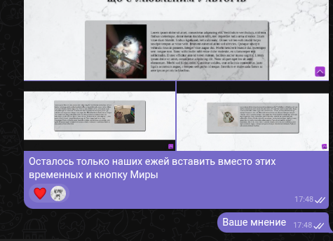

Ідея для цієї історичної сторінки

Перша ідея сторінки з фактами
Ідея для сторінки "галерея"

Креслення сторінки про поради
Перша версія головной сторінки на папері
Перший день створення
Розбираємось на прикладах, що та як
Концепт малюнку з кнопки "На головну"
Майже кінець сторінки про топ Їжаків

Трабли з фоном головної сторінки
Невдачі на головній сторінці та викинуті ідеї
Прототив головної сторінки